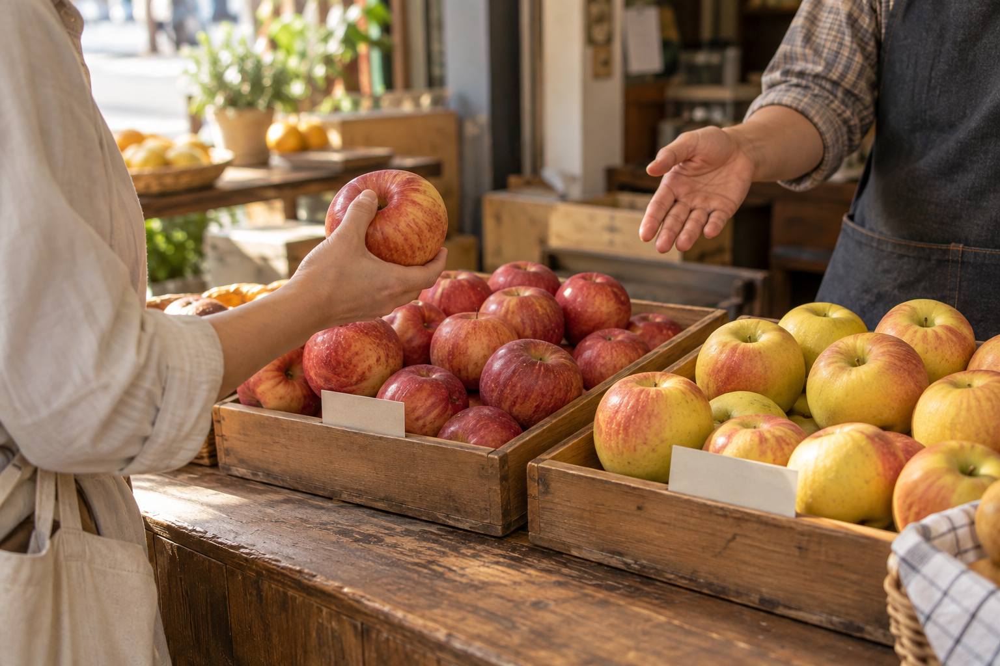

INSIGHT · 2026.09.13
가격표 옆의
품종 이름을 읽는 시간
지난번 맛있게 먹은 사과를 다시 찾고 싶을 때, 품종 이름은 가게에서 나눈 짧은 대화를 식탁까지 이어 줍니다.

사과를 사러 갔다가 잠깐 말이 막히는 순간을 떠올려 봅니다. “지난번 그 사과 있어요?” 봉지에 담아 온 모양은 기억나는데 이름은 생각나지 않습니다. 붉은빛이 좀 돌았고, 저녁에 깎아 먹었을 때 마음에 들었다는 말만 남습니다. 상인은 어느 쪽 진열대에서 골랐는지 되묻습니다.
과일을 살 때 가격은 금방 읽힙니다. 그 옆의 작은 품종 이름은 눈을 한 번 더 주어야 보입니다. 낯선 이름이라 그냥 지나치기도 합니다. 당장 봉지를 채우는 데 꼭 필요한 말은 아니지만, 다음번에 같은 과일을 찾으려 하면 그 작은 글씨가 아쉬워집니다.
이름을 알면 질문이 조금 구체적이 됩니다
“이 사과 이름이 뭐예요?” 하고 묻는 데서 시작해도 좋겠습니다. 이름을 들었다고 맛을 다 알게 되는 것은 아닙니다. 다만 다음에는 “지난번 이 품종을 먹었는데 오늘 들어온 것도 비슷한가요?” 하고 물을 수 있습니다. 기억을 설명할 자리가 하나 생기는 셈입니다.
상인에게도 손님의 말은 작은 단서가 됩니다. 무조건 달다는 설명을 반복하기보다, 지난번에 어떤 점이 좋았는지 되물을 수 있습니다. 씹는 느낌이 좋았는지, 먹고 난 뒤 향이 기억났는지. 대화가 짧더라도 서로 떠올리는 사과가 조금 가까워집니다.
“그때 그 사과”에 이름이 붙으면, 다음 장보기가 이어집니다.
기억할 것은 이름 하나와 내 말 한 줄
품종을 공부하듯 외울 필요는 없습니다. 휴대전화 메모에 이름을 적고, 집에서 먹은 뒤 “나는 이 씹는 느낌이 좋았다” 정도를 덧붙이면 어떨까요. 누군가의 맛 평가를 옮겨 적는 대신 내가 먹은 순간을 남기는 것입니다. 다음번에는 그 한 줄을 보고 고르거나 다른 것을 물어볼 수 있습니다.
이 글은 특정 매장의 취재나 판매 추세를 보고하는 글이 아니라, 장보기에서 떠올릴 수 있는 장면을 풀어 쓴 생활 에세이입니다. 품종 이름만으로 맛이나 품질을 보장하려는 뜻도 아닙니다. 여기서 생각해 보고 싶은 것은 정보를 얼마나 많이 주느냐보다, 손님이 다음에 다시 꺼낼 수 있는 말을 남겨 주느냐입니다.
봉지 안의 사과는 저녁이면 접시로 옮겨 가고, 며칠 뒤에는 다 먹고 없어집니다. 그래도 이름 하나가 남아 있으면 가게에서 대화를 다시 시작하기가 수월합니다. 다음 장보기에는 가격을 확인한 뒤, 그 옆의 글씨에도 잠깐 눈을 두어 봅니다.